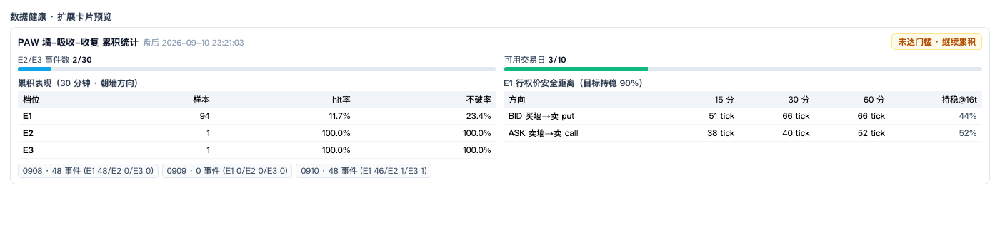

PAW 墙-吸收-收复 累积统计卡片判读与好坏数据判定标准

一句话结论
这张卡上同时有两类信息，必须分开读：
- 「数据好不好」 = 覆盖是否完整、任务是否在跑（决定统计可不可信）
- 「信号好不好」 = 命中率是否超随机、缓冲是否可交易（决定 Setup 5 能不能用）
坏数据 ≠ 坏信号；样本少 ≠ 数据坏。下面给出判定标准。
卡片五个区块怎么读
| 区块 | 含义 | 好 / 坏 |
|---|---|---|
| E2/E3 事件数 2/30 | 高价值形态（墙+吸收+收复确认）的样本进度 | 进度条满 = 可下结论；未满 = 只能观察（当前：不足） |
| 可用交易日 3/10 | 有多少天 DOM 覆盖完整、能用来做统计 | 这是数据质量指标；9/10 天不可用就是坏数据环境 |
| 累积表现（30 分钟） | 三档的 样本数 / hit率（朝墙方向 ≥0.15%）/ 不破率 | hit 要显著高于随机基准；不破率低说明「墙≠保险」 |
| E1 行权价安全距离 | 达到 90% 持稳所需的最小离墙距离（tick），分买卖两侧 | 能算出有限值 = 数据可用；显示 — = 样本不足（坏） |
| 底部 chips + 红字 | 每个交易日的事件数（E1/E2/E3 拆分）；数据不可用日 / 超期告警 | 出现红字 = 先修数据，别看统计 |
对照当前值：E1 94 例 hit 11.7% 不破 23.4%、BID 51/66/66 tick、ASK 38/40/52 tick、持稳@16t = 44%/52%。
「好数据」的定义（数据质量轴）
| 判定项 | 好数据的标准 | 当前状态 |
|---|---|---|
| 覆盖完整 | 当天 DOM 从开盘前开始录、无损坏（status = ok） |
✅ 09-08 / 09-10 完整；⚠️ 09-09 事件 0（DOM 傍晚 18:06 才开始录 → 那天只有晚段样本，属「部分可用」） |
| 快照连续 | 窗口内快照数达标、无长间断（自动降级为 DEGRADED/INSUFFICIENT） |
✅ 07:15 曾因「间断 138.9s」被标 DEGRADED（仍可用，不拦参数） |
| 任务在跑 | 最近交易日收盘后已更新（≤26 小时） | ✅ 更新于 23:21，无红字告警 |
| 无污染日 | 无「数据不可用日」红字 | ✅ 无（bad_days 为空） |
坏数据的四种具体形态：① DOM 傍晚才开录/文件损坏 → 当日事件数骤降或为 0；② tick 断流 → 该窗口标 INSUFFICIENT，不得作为样本/开仓依据；③ 任务未跑（>26h）→ 卡片红字 + 参数冻结；④ 快照间断过长 → 降级（可用但置信度下降）。
「好信号」的定义（统计价值轴）
| 判定项 | 好信号的标准 | 当前状态 |
|---|---|---|
| 超越随机 | hit 率显著高于同日随机基准 | ✅ E1 30 分钟 11.7% vs 基准 0.9%（p≈0.0007）；60 分钟 22.3% vs 10.2%（p≈0.015） |
| 样本量 | E2/E3 ≥30 例 且 ≥10 个可用交易日 | ❌ 2/30 例、3/10 天 → 不可启用 |
| 防守性 | 不破率越高越安全 | ❌ 30 分钟不破率仅 23.4% → 76% 的墙会被击穿，说明「墙厚≠墙会守」 |
| 缓冲可交易 | 推荐缓冲有限且对应价差仍有权利金 | ⚠️ BID 需 66 tick（16.5 点）、ASK 需 40 tick（10 点） —— 缓冲很大，价差宽度与权利金要单独评估 |
| 持稳曲线可用 | 曲线单调且能读出 90% 点 | ✅ 可读（BID@16t 44% → 66t 90%；ASK@16t 52% → 40t 90%） |
| 分侧合理 | 两侧都有值、无封顶/极值 | ⚠️ 两侧明显不对称（ASK 更安全）→ 不能混用同一缓冲 |
判定阈值（可操作版）
| 你看到 | 结论 |
|---|---|
| 门槛两条进度条都满 + E1/E2/E3 的 p<0.05 | 数据与信号都过关 → 进入 Setup 5 dry-run |
| 进度条未满（当前状态） | 只观察，不接入自动开仓（Setup 5 保持「设计中」） |
| hit 率 ≈ 基准（差值不显著） | 垃圾样本：不是数据坏，是信号无效 → 放弃或重设形态定义 |
| 不破率低但 hit 高（当前 E1） | 说明价值在方向性尾部，不在防守 → 必须「缓冲 ≥ p95 + 短持有期」，靠小止损博大尾 |
| 缓冲大到价差无利可图 | 工程上不可行 → 该 Setup 只能作为方向参考，不做卖方 |
| 出现红字（不可用日 / >26h 未更新） | 先修数据再用参数（参数此时冻结） |
对当前这张卡的判读
- 数据：好 —— 3 天可用、无不可用日、任务按时更新（唯一瑕疵是 09-09 只有晚段样本，贡献低）。
- 样本：不足 —— E2/E3 仅 2 例、可用日 3 天 → 还不能启用 Setup 5（这正是卡片显示「未达门槛·继续累积」的含义）。
- E1 边际：成立且显著，但防守性弱（76% 会破）→ 若将来启用，必须用「缓冲在 p95 之外 + 15–30 分钟短持有期」，且两侧分别取缓冲。
- 最值得先试的一侧是 ASK（卖 call）：只需 40 tick（10 点）就达 90% 持稳，比 BID 的 66 tick 更容易做出有利可图的价差。
关联产物与规则位置
| 类型 | 位置 |
|---|---|
| 卡片数据源 | GET /data/paw_stats（读 PyTools/jobs/state/paw_calibration.json + order_flow_paw_stats.json） |
| 校准表（机器可读） | PyTools/jobs/state/paw_calibration.json（逐 tier × 方向 × 持有期：hit/hold、越墙 p50/p90/p95/p99、持稳曲线、推荐缓冲） |
| 累积报告 | PyTools/jobs/state/order_flow_paw_stats_report.md |
| 每日自动检测 | launchd com.bbt.orderflow-paw-stats（周一至周五 14:45 / 21:15）→ 邮件「BBT DOM Wall反转每日统计」 |
| 规则手册 | 第一部分 §2c 第 11~13 项（PAW/逐价吸收/击穿-收复）、§3.5 Setup 5（含每日检测产出、启用判定、参数取值、失效降级） |